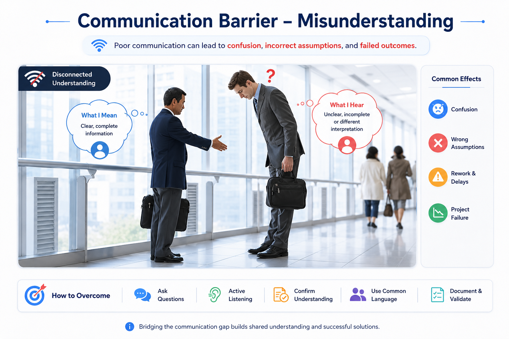

Challenges and Types of Requirements
Stakeholders speak in goals, frustrations and wishes; engineers must turn those into precise behavior, qualities and constraints.
Differentiate functional from non-functional requirements and explain why communication, domain knowledge and change make elicitation difficult.
Different people see different versions of the same problem
- Customers, users and developers have different backgrounds, terminology and assumptions.
- The team may not know the application domain; customers may not know what software can realistically do.
- Needs are incomplete, change over time, and may conflict with one another or with policy, cost and technical constraints.
- Software development is often a “wicked problem”: learning more about the problem can change how the problem itself is understood.
- Non-functional requirements are frequently understated even though they may determine whether the system is usable, secure, safe or scalable.

What the system does vs. how well and under what constraints
⚙️ Functional requirements
Statements of the information-processing capabilities the software must possess.
Official example — car rental: the system shall allow a potential customer to inquire about car information and availability using combinations of make, model, date, price range and class.
🛡️ Non-functional requirements
Requirements about performance, quality, safety, security, interfaces, design or implementation constraints.
Make them measurable
The system must handle a typical workload of 10,000 simultaneous inquiries.
Response time must not exceed 3 seconds under the typical workload.
The system must protect website contents from malicious attacks and protect user privacy.
The system must operate across specified operating systems and database platforms.
The system may be required to support web-based, stand-alone, voice or mobile interfaces.
University admissions
Functional: “Applicants shall upload supporting documents and submit an application.” Performance: “95% of page requests shall complete within 2 seconds under 5,000 concurrent users.” Security: “Only authorized admissions staff may view confidential applicant documents.”
Functional = capability. Non-functional = quality or constraint. A good requirement should be precise enough that another person can determine whether it has been satisfied.
The section below is added clarification for self-study.
Do not classify by keywords alone
“The system shall encrypt stored passwords” describes a required security behavior, but its engineering purpose is a security requirement. Classify by the intent of the requirement, not merely by whether the sentence contains a verb.